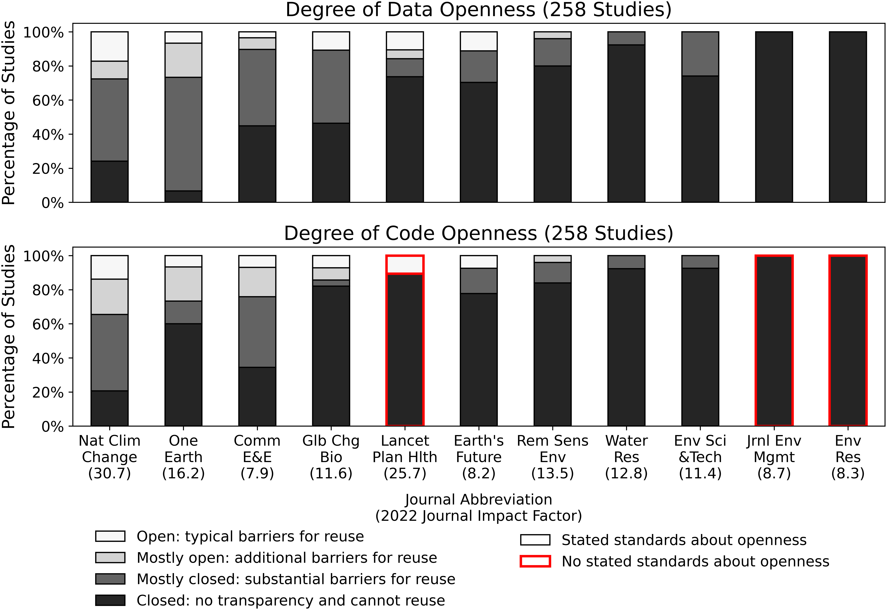
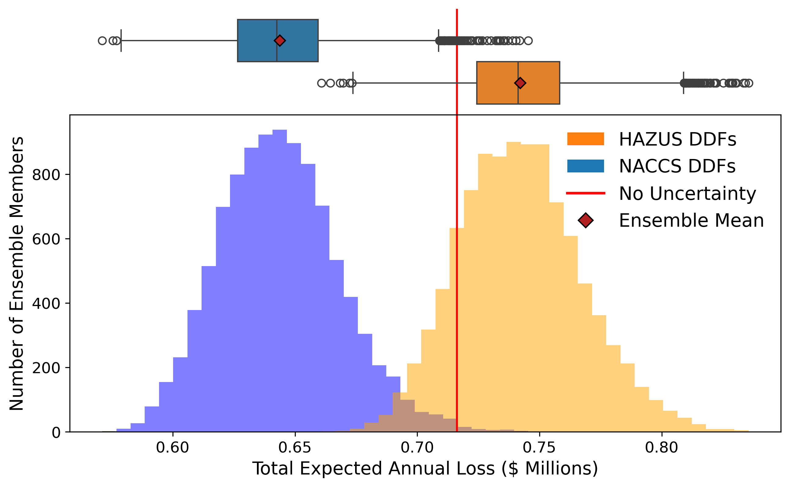
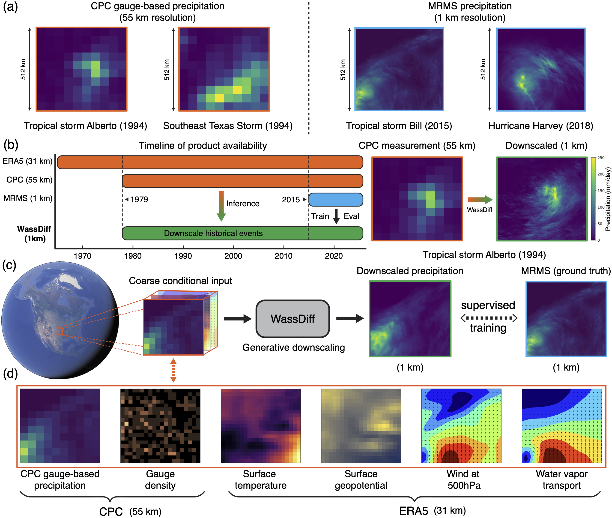
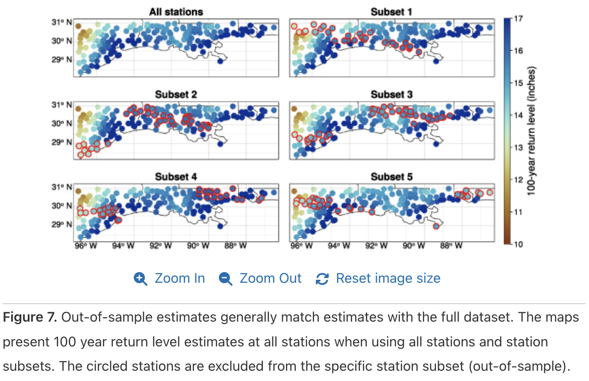
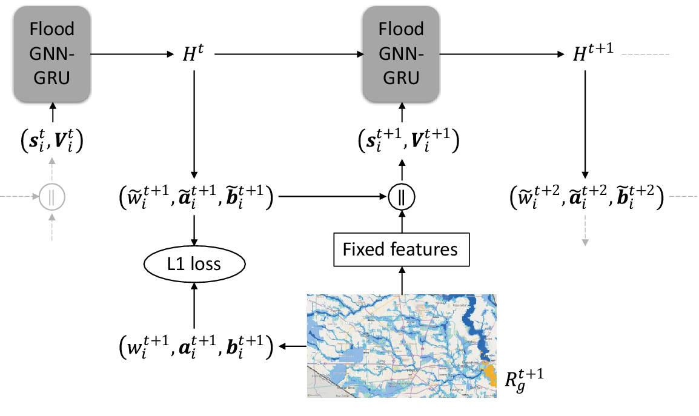
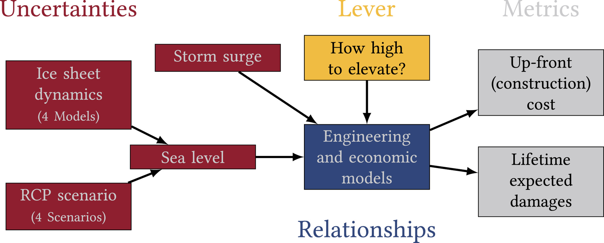
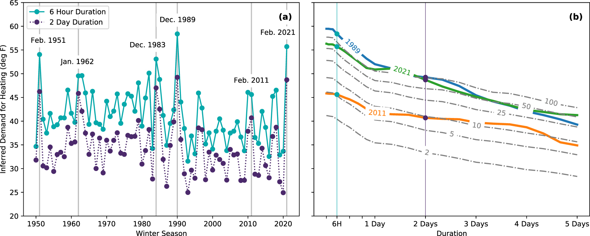

The Doss-Gollin Research Group at Rice CEVE builds probabilistic hazard models that enable climate risk analysis and bottom-up decision support for complex infrastructure systems, with a focus on urban flooding. We integrate Earth science, AI, and decision analysis to characterize nonstationary hazards, quantify their impacts on the built environment, and design adaptive risk-management strategies. We co-develop these tools with structural engineers, water managers, industry, and community organizations.
News
- Jan 2026. James spoke with the Wall Street Journal about the accuracy and limitations of national property-level flood risk scores.
- Jan 2026. Adam Pollack (Iowa), James, and coauthors argue in a new PNAS paper that climate-risk research needs more transparency and reusability.
- Dec 2025. James and Yuchen traveled to AGU 2025: Yuchen presented her hierarchical Bayesian rainfall IDF poster, James gave a talk on the TxRain framework, and James chaired sessions on urban flood risk and catastrophe modeling.
- Nov 2025. James gave an invited talk at the Rice Statistics Department colloquium on statistical modeling for nonstationary hydroclimate hazards.
- Sep 2025. Yuhao Liu (Rice ECE), James, and coauthors published WassDiff — a Wasserstein-regularized diffusion model for downscaling extreme precipitation — in IEEE TGRS.
- Sep 2025. CERCAT funded our project on a nonstationary joint probability method for tropical cyclone hazard assessment.
- Aug 2025. Yuchen Lu published her first first-author paper, on Bayesian spatiotemporal modeling of nonstationary extreme rainfall, open-access in Environmental Research: Climate.
- Jul 2025. James spoke with KEYE, Fox26, AP, ABC13, KVUE, and the Wall Street Journal about flash flood hydrology and the Guadalupe River disaster.
- Jul 2025. James reflects on the Guadalupe River flood — building in the floodway, gaps in real-time gauges and forecasting, and the trade-off between certainty and lead time in warnings.
- Jun 2025. James spoke with Telemundo Houston's special Bajo la Amenaza del Golfo about the risks of hurricanes and extreme weather facing Houston.
- Apr 2025. Dongwook Kim received the Karen and John Huff Graduate Fellowship in Civil and Environmental Engineering at Rice.
- Apr 2025. Yuchen Lu passed her PhD thesis proposal on probabilistic analysis of nonstationary hydroclimate extremes.
No matching items
Featured Papers

Unlocking The Benefits Of Transparent And Reusable Science For Climate Risk Management
Proceedings of the National Academy of Sciences

UNSAFE: An UNcertain Structure And Fragility Ensemble Framework For Property-Level Flood Risk Estimation
Journal of Open Source Software

Downscaling Extreme Precipitation With Wasserstein Regularized Diffusion
IEEE Transactions on Geoscience and Remote Sensing

Bayesian Spatiotemporal Nonstationary Model Quantifies Robust Increases In Daily Extreme Rainfall Across The Western Gulf Coast
Environmental Research: Climate

FloodGNN-GRU: A Spatio-Temporal Graph Neural Network For Flood Prediction
Environmental Data Science

A Subjective Bayesian Framework For Synthesizing Deep Uncertainties In Climate Risk Management
Earth's Future

How Unprecedented Was The February 2021 Texas Cold Snap?
Environmental Research Letters
No matching items